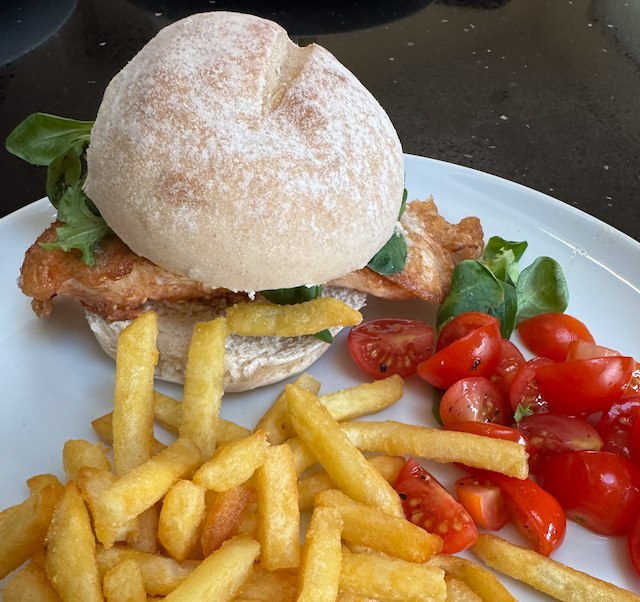

Salmon Sandwich

Serves: 4
Cook Time: 30 min
From BBCGoodFood. Serve with cucumber pickle and chips.
Ingredients
- 4 salmon fillets, skinned
- 1 egg, beaten
- 1 tbsp sesame seeds
- a few salad leaves
- 4 bread rolls/subs
Method
Dip the salmon in the beaten egg to coat.
Heat frying pan to hot. Add oil, salmon, and the remaining egg. Sprinkle with salt and sesame seeds. Turn heat to medium and cook for a few min. Flip and cook for a few min more.
Split the bread rolls. Add a few salad leaves and the salmon.